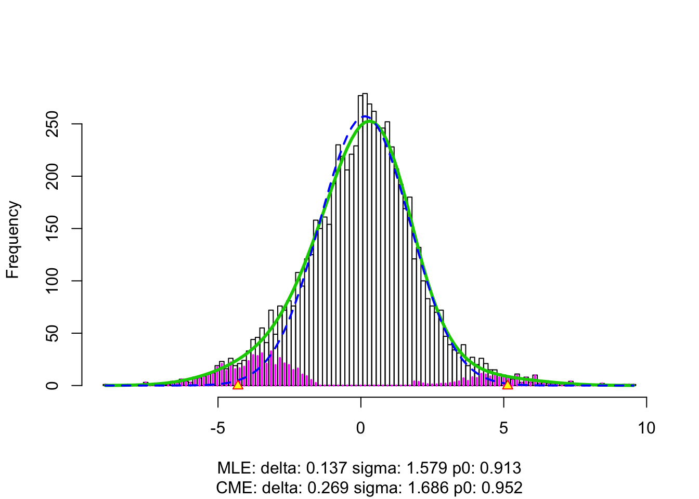

cashrLast updated: 2018-10-05
workflowr checks: (Click a bullet for more information) ✔ R Markdown file: up-to-date
Great! Since the R Markdown file has been committed to the Git repository, you know the exact version of the code that produced these results.
✔ Environment: empty
Great job! The global environment was empty. Objects defined in the global environment can affect the analysis in your R Markdown file in unknown ways. For reproduciblity it’s best to always run the code in an empty environment.
✔ Seed:
set.seed(12345)
The command set.seed(12345) was run prior to running the code in the R Markdown file. Setting a seed ensures that any results that rely on randomness, e.g. subsampling or permutations, are reproducible.
✔ Session information: recorded
Great job! Recording the operating system, R version, and package versions is critical for reproducibility.
✔ Repository version: 49f870a
wflow_publish or wflow_git_commit). workflowr only checks the R Markdown file, but you know if there are other scripts or data files that it depends on. Below is the status of the Git repository when the results were generated:
Ignored files:
Ignored: .DS_Store
Ignored: .Rhistory
Ignored: .Rproj.user/
Ignored: analysis/.DS_Store
Ignored: analysis/BH_robustness_cache/
Ignored: analysis/FDR_Null_cache/
Ignored: analysis/FDR_null_betahat_cache/
Ignored: analysis/Rmosek_cache/
Ignored: analysis/StepDown_cache/
Ignored: analysis/alternative2_cache/
Ignored: analysis/alternative_cache/
Ignored: analysis/ash_gd_cache/
Ignored: analysis/average_cor_gtex_2_cache/
Ignored: analysis/average_cor_gtex_cache/
Ignored: analysis/brca_cache/
Ignored: analysis/cash_deconv_cache/
Ignored: analysis/cash_fdr_1_cache/
Ignored: analysis/cash_fdr_2_cache/
Ignored: analysis/cash_fdr_3_cache/
Ignored: analysis/cash_fdr_4_cache/
Ignored: analysis/cash_fdr_5_cache/
Ignored: analysis/cash_fdr_6_cache/
Ignored: analysis/cash_plots_2_cache/
Ignored: analysis/cash_plots_3_cache/
Ignored: analysis/cash_plots_cache/
Ignored: analysis/cash_sim_1_cache/
Ignored: analysis/cash_sim_2_cache/
Ignored: analysis/cash_sim_3_cache/
Ignored: analysis/cash_sim_4_cache/
Ignored: analysis/cash_sim_5_cache/
Ignored: analysis/cash_sim_6_cache/
Ignored: analysis/cash_sim_7_cache/
Ignored: analysis/correlated_z_2_cache/
Ignored: analysis/correlated_z_3_cache/
Ignored: analysis/correlated_z_cache/
Ignored: analysis/create_null_cache/
Ignored: analysis/cutoff_null_cache/
Ignored: analysis/design_matrix_2_cache/
Ignored: analysis/design_matrix_cache/
Ignored: analysis/diagnostic_ash_cache/
Ignored: analysis/diagnostic_correlated_z_2_cache/
Ignored: analysis/diagnostic_correlated_z_3_cache/
Ignored: analysis/diagnostic_correlated_z_cache/
Ignored: analysis/diagnostic_plot_2_cache/
Ignored: analysis/diagnostic_plot_cache/
Ignored: analysis/efron_leukemia_cache/
Ignored: analysis/fitting_normal_cache/
Ignored: analysis/gaussian_derivatives_2_cache/
Ignored: analysis/gaussian_derivatives_3_cache/
Ignored: analysis/gaussian_derivatives_4_cache/
Ignored: analysis/gaussian_derivatives_5_cache/
Ignored: analysis/gaussian_derivatives_cache/
Ignored: analysis/gd-ash_cache/
Ignored: analysis/gd_delta_cache/
Ignored: analysis/gd_lik_2_cache/
Ignored: analysis/gd_lik_cache/
Ignored: analysis/gd_w_cache/
Ignored: analysis/knockoff_10_cache/
Ignored: analysis/knockoff_2_cache/
Ignored: analysis/knockoff_3_cache/
Ignored: analysis/knockoff_4_cache/
Ignored: analysis/knockoff_5_cache/
Ignored: analysis/knockoff_6_cache/
Ignored: analysis/knockoff_7_cache/
Ignored: analysis/knockoff_8_cache/
Ignored: analysis/knockoff_9_cache/
Ignored: analysis/knockoff_cache/
Ignored: analysis/knockoff_var_cache/
Ignored: analysis/marginal_z_alternative_cache/
Ignored: analysis/marginal_z_cache/
Ignored: analysis/mosek_reg_2_cache/
Ignored: analysis/mosek_reg_4_cache/
Ignored: analysis/mosek_reg_5_cache/
Ignored: analysis/mosek_reg_6_cache/
Ignored: analysis/mosek_reg_cache/
Ignored: analysis/pihat0_null_cache/
Ignored: analysis/plot_diagnostic_cache/
Ignored: analysis/poster_obayes17_cache/
Ignored: analysis/real_data_simulation_2_cache/
Ignored: analysis/real_data_simulation_3_cache/
Ignored: analysis/real_data_simulation_4_cache/
Ignored: analysis/real_data_simulation_5_cache/
Ignored: analysis/real_data_simulation_cache/
Ignored: analysis/rmosek_primal_dual_2_cache/
Ignored: analysis/rmosek_primal_dual_cache/
Ignored: analysis/seqgendiff_cache/
Ignored: analysis/simulated_correlated_null_2_cache/
Ignored: analysis/simulated_correlated_null_3_cache/
Ignored: analysis/simulated_correlated_null_cache/
Ignored: analysis/simulation_real_se_2_cache/
Ignored: analysis/simulation_real_se_cache/
Ignored: analysis/smemo_2_cache/
Ignored: data/LSI/
Ignored: docs/.DS_Store
Ignored: docs/figure/.DS_Store
Ignored: output/fig/
Unstaged changes:
Modified: code/gdfit.R
| File | Version | Author | Date | Message |
|---|---|---|---|---|
| rmd | 49f870a | LSun | 2018-10-05 | wflow_publish(c(“cash_paper_fig_leukemia.rmd”, “cash_paper_fig1.rmd”, |
Document the leukemia figure in the cashr paper.
source("../code/gdash_lik.R")
source("../code/gdfit.R")load(url("http://statweb.stanford.edu/~ckirby/brad/LSI/datasets-and-programs/data/leukdata.RData"))design <- c(rep(0, 47), rep(1, 25))
lim = limma::lmFit(leukdata, model.matrix(~design))
r.ebayes = limma::eBayes(lim)
p = r.ebayes$p.value[, 2]
t = r.ebayes$t[, 2]
z = -sign(t) * qnorm(p/2)
x = lim$coefficients[, 2]
s = x / zlocfdrfit.locfdr <- locfdr::locfdr(z)
qvaluefit.qvalue <- qvalue::qvalue(p)ashrfit.ash <- ashr::ash(x, s, mixcompdist = "normal", method = "fdr")cashrfit.cash <- gdash(x, s, gd.ord = 10)x.plot <- seq(-10, 10, length = 1000)
gd.ord <- 10
hermite = Hermite(gd.ord)
gd0.std = dnorm(x.plot)
matrix_lik_plot = cbind(gd0.std)
for (i in 1 : gd.ord) {
gd.std = (-1)^i * hermite[[i]](x.plot) * gd0.std / sqrt(factorial(i))
matrix_lik_plot = cbind(matrix_lik_plot, gd.std)
}
y.plot = matrix_lik_plot %*% fit.cash$w * fit.cash$fitted_g$pi[1]
method.col <- scales::hue_pal()(5)
setEPS()
postscript("../output/fig/paper/leukemia.eps", height = 5, width = 12)
par(mfrow = c(1, 2))
#####
hist(z, prob = TRUE, main = "", xlab = expression(paste(z, "-scores")), cex.lab = 1.25)
lines(x.plot, y.plot, col = method.col[5], lwd = 2)
lines(x.plot, dnorm(x.plot), col = "orange", lty = 2, lwd = 2)
lines(x.plot, dnorm(x.plot, fit.locfdr$fp0[3, 1], fit.locfdr$fp0[3, 2]) * fit.locfdr$fp0[3, 3], col = method.col[3], lty = 2, lwd = 2)
text(-3, 0.22, "N(0,1)", col = "orange")
arrows(-1.8, 0.22, -1.1, 0.215, length = 0.1, angle = 20, col = "orange")
text(-5, 0.15, bquote(atop("locfdr empirical null", .(round(fit.locfdr$fp0[3, 3], 2)) %*% N(.(round(fit.locfdr$fp0[3, 1], 2)), .(round(fit.locfdr$fp0[3, 2], 2))^2))), col = method.col[3])
arrows(-2, 0.15, -1.5, 0.145, length = 0.1, angle = 20, col = method.col[3])
text(4.5, 0.10, "cashr null", col = method.col[5])
arrows(2.9, 0.10, 2, 0.095, length = 0.1, angle = 20, col = method.col[5])
####
plot(z, z, type = "n", ylim = c(0, 1), ylab = "Local FDR", xlab = expression(paste(z, "-scores")), cex.lab = 1.25)
points(z, fit.cash$lfdr, pch = 15, cex = 0.5, col = method.col[5])
points(z, fit.locfdr$fdr, pch = 16, cex = 0.5, col = method.col[3])
points(z, fit.qvalue$lfdr, pch = 17, cex = 0.5, col = method.col[2])
points(z, ashr::get_lfdr(fit.ash), pch = 18, cex = 0.5, col = method.col[4])
abline(h = 0.2, lty = 2)
legend("topright", bty = "n", pch = 15 : 18, col = method.col[c(5, 3, 2, 4)], c("cashr", "locfdr", "qvalue", "ashr"))
dev.off()quartz_off_screen
2 sessionInfo()R version 3.4.3 (2017-11-30)
Platform: x86_64-apple-darwin15.6.0 (64-bit)
Running under: macOS High Sierra 10.13.6
Matrix products: default
BLAS: /Library/Frameworks/R.framework/Versions/3.4/Resources/lib/libRblas.0.dylib
LAPACK: /Library/Frameworks/R.framework/Versions/3.4/Resources/lib/libRlapack.dylib
locale:
[1] en_US.UTF-8/en_US.UTF-8/en_US.UTF-8/C/en_US.UTF-8/en_US.UTF-8
attached base packages:
[1] stats graphics grDevices utils datasets methods base
other attached packages:
[1] ashr_2.2-7 Rmosek_8.0.69 PolynomF_1.0-2 CVXR_0.95
[5] REBayes_1.3 Matrix_1.2-14 SQUAREM_2017.10-1 EQL_1.0-0
[9] ttutils_1.0-1
loaded via a namespace (and not attached):
[1] gmp_0.5-13.1 Rcpp_0.12.16 pillar_1.2.2
[4] plyr_1.8.4 compiler_3.4.3 git2r_0.21.0
[7] workflowr_1.1.1 R.methodsS3_1.7.1 R.utils_2.6.0
[10] iterators_1.0.9 tools_3.4.3 digest_0.6.15
[13] bit_1.1-13 tibble_1.4.2 gtable_0.2.0
[16] evaluate_0.10.1 lattice_0.20-35 rlang_0.2.0
[19] foreach_1.4.4 yaml_2.1.19 parallel_3.4.3
[22] Rmpfr_0.7-0 ECOSolveR_0.4 stringr_1.3.1
[25] knitr_1.20 rprojroot_1.3-2 bit64_0.9-7
[28] grid_3.4.3 qvalue_2.10.0 R6_2.2.2
[31] rmarkdown_1.9 limma_3.34.9 reshape2_1.4.3
[34] ggplot2_2.2.1 locfdr_1.1-8 magrittr_1.5
[37] whisker_0.3-2 scales_0.5.0 splines_3.4.3
[40] MASS_7.3-50 backports_1.1.2 codetools_0.2-15
[43] htmltools_0.3.6 scs_1.1-1 assertthat_0.2.0
[46] colorspace_1.3-2 stringi_1.2.2 lazyeval_0.2.1
[49] munsell_0.4.3 pscl_1.5.2 doParallel_1.0.11
[52] truncnorm_1.0-8 R.oo_1.22.0 This reproducible R Markdown analysis was created with workflowr 1.1.1